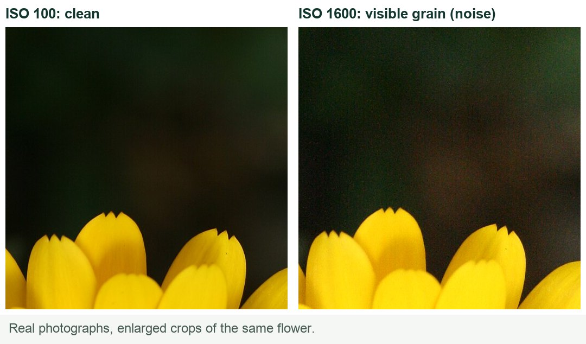
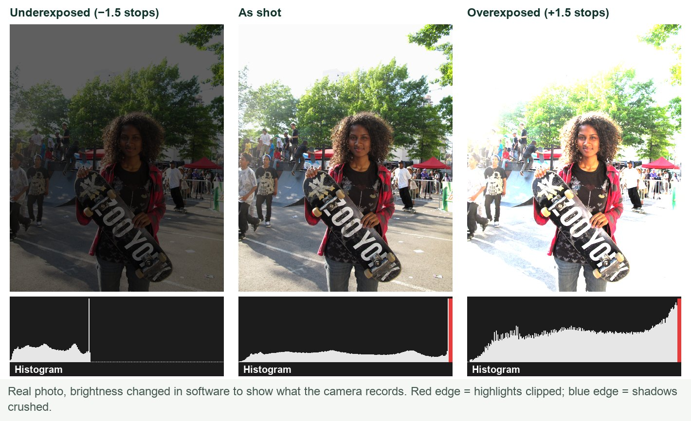
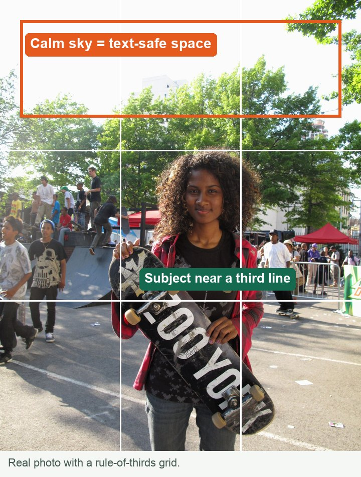
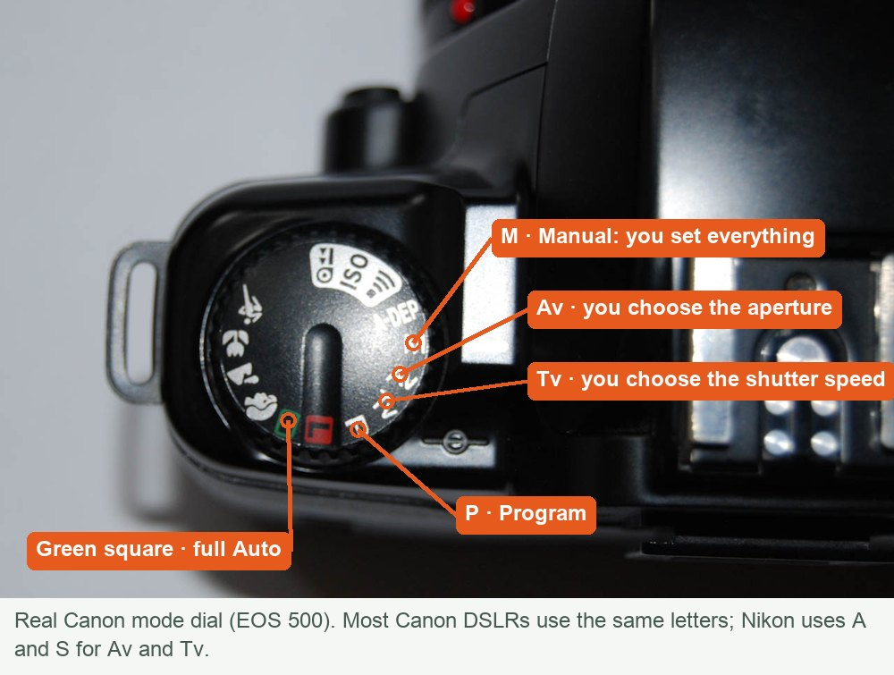
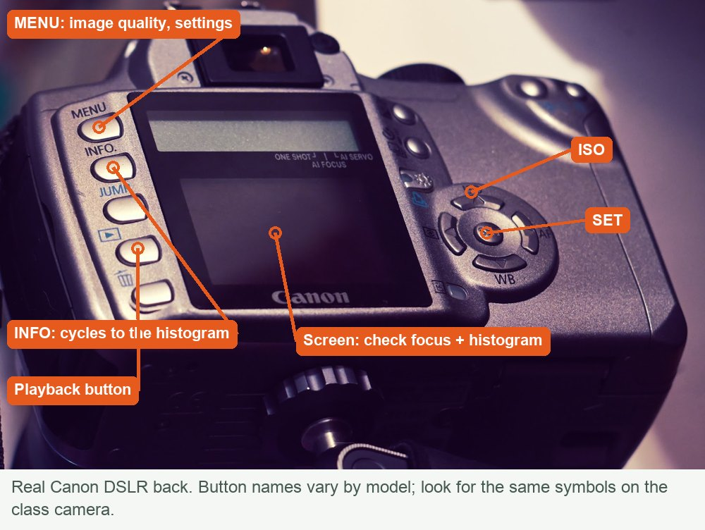
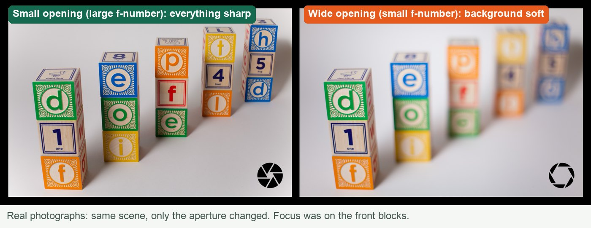
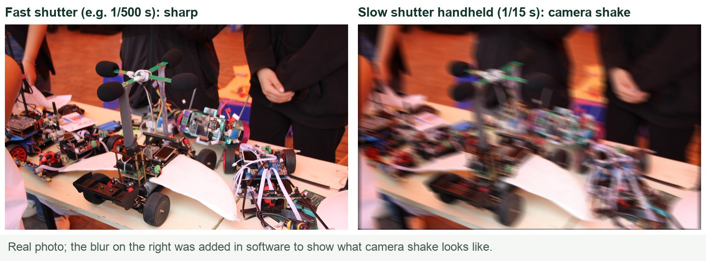
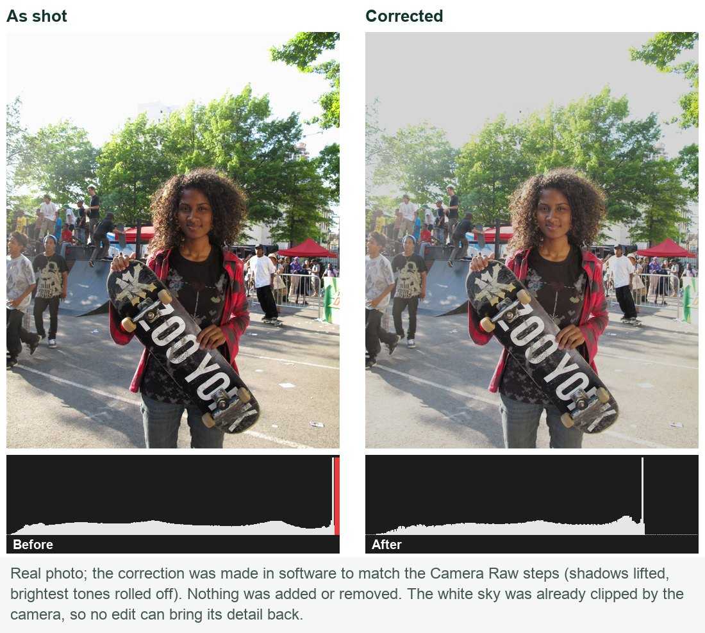
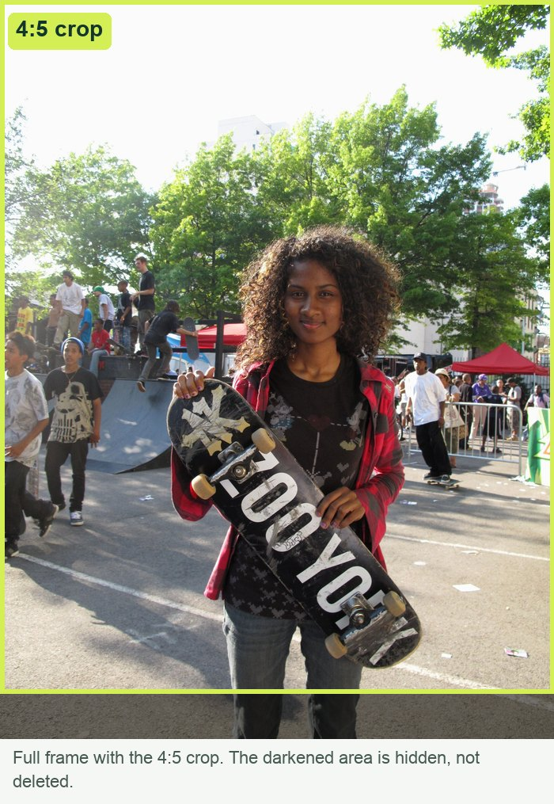
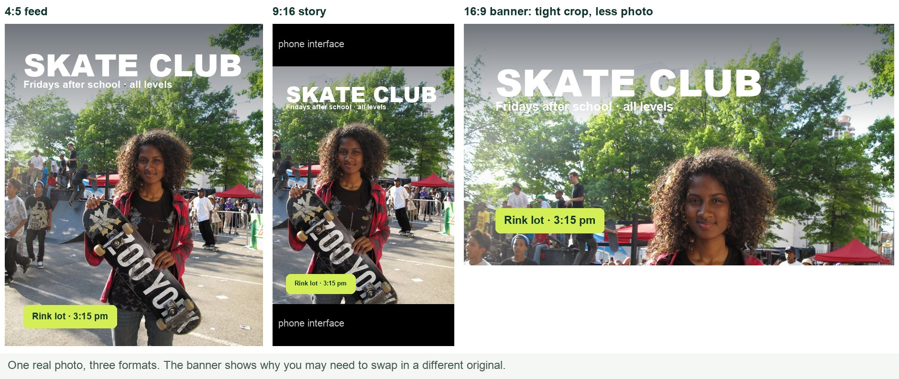

Example target built from an openly licensed photo (credit in Sources). Your campaign uses your own photographs and message.
From shutter to screen.
You control the camera on purpose, shape the light, and plan space for the message before you shoot.
In Photoshop you correct the photo without changing its truth, then build a campaign that reads in five seconds.
Finally you prove the design survives a new format, on your own.
My supports
Turn on any help you want. Your teacher may have set some for you. They change how the guide helps, not what is assessed.
Your production brief
Make a campaign from photographs only you could take.
You are the photographer and designer for a real school or community message. Every image in your campaign is your own original photograph. You will plan it, capture it with deliberate camera and light decisions, correct it honestly, and build a campaign that reads in five seconds, then prove it survives a new format.
You will hand in
Original photo series and a contact sheet
Lead_Master.psd (edited, reversible)
Campaign_4x5.psd + JPG (1080 × 1350)
Practical check: Campaign_Change.psd + JPG
Source and consent log, edit log
Motion-ready layers for Sprint 4
Time
Nine 70-minute lessons, 5–16 October (plan dates; Monday 12 October is Thanksgiving). Sessions A–E below map to the lessons.
Help
Use the Learning Studio Coach to clarify a term or check your understanding in guided steps. Not during the practical check.
Knowledge + Reflection Form: your teacher will open it in lesson 7. (Form registration pending.)
Industry connection
This is not a filter exercise. It is campaign photography.
Real-world parallel: Apple “Shot on iPhone” World Gallery
In 2015 Apple ran a billboard campaign made entirely from photographs taken by ordinary users. It ran on thousands of billboards in cities around the world and won the Outdoor Grand Prix at the Cannes Lions festival. The photographs did the persuading: the product was proved by what it could capture. R1
Notice: the photos carry the message with almost no text; each image has a clear subject and simple space; the campaign stays consistent across very different photographs.
Reference only. This classroom project is not affiliated with Apple. Do not reuse their images.
The professional problem
Client: your chosen school or community group · Audience: who you named in your brief · Message: one sentence · Design question: How can one honest photograph make the audience notice, understand and act, before they read every word?
Photography + design lens
Before touching the camera, understand what controls the picture.
1 · Exposure is three decisions
Brightness comes from three controls. Each has a side effect you can use: aperture changes how much is in focus, shutter speed freezes or blurs movement, ISO trades brightness for grain. A “stop” doubles or halves the light, so you can trade one control for another and keep the same brightness.
Illustration: the exposure triangle and its side effects.

Real photographs: higher ISO adds grain.
2 · The histogram is evidence
Your eyes and the small camera screen lie in bright rooms. The histogram does not. Detail pushed against either edge is gone, and editing cannot invent it back.

real histograms of the same photo at three exposures.
3 · Light decides mood and detail
Soft light (large source) makes gentle shadows. Hard light (small source) makes sharp shadows and shows texture. Direction matters as much as brightness.
Illustration: the same subject under three kinds of light.
4 · Composition leaves room for the message
Put the subject on a third, use lines to lead the eye, and leave a calm area for the headline. You plan this when you shoot.

rule of thirds and text-safe space on a real photo.Illustration: three composition tools.
5 · Hierarchy, contrast and alignment
The viewer should read headline → subject → action. One dominant element, clear contrast behind type, and text aligned to shared guides — the same principles you used in Truck Ad.
6 · Honest editing and consent
A campaign can be styled, but it must not mislead about facts. People must agree to be photographed and be cleared for public use.
Illustration: the honest-editing line for this project.
What this project assesses
Skills you will show.
Skill (registered ID)
Where you show it
Camera capture · PS-CAM-01
Steps 2–5 and 10–12; contact sheet and settings log
Steps 1, 8, 17–18 and the practical check (step 19)
Primary achievement evidence: the practical check (lesson 8, mm12-26-s03-d08). Guided steps are practice; completing them and using supports are recorded separately from achievement.
Observation: your teacher may watch you make a deliberate framing or lighting change and ask what it did. Conversation: “What did the image include or leave out, and how did that shape the message?”
You choose a real message, then learn the three controls that decide every exposure — and how to read the camera’s own evidence.
TODAYChoose your message and prove you can change one camera setting on purpose.
01
Choose a real message you can actually photograph
IN SHORTPick a real, photographable message and write it down in five lines.
READ ALOUD
DOCUMENT: Campaign_Brief.txt (templates ZIP) SELECT: Your brief template and the ethics checklist TOOLS / ROUTE: Open the templates ZIP › fill in the brief
Download the templates ZIP from Start + downloads and open campaign-brief-template.txt.
Choose a school or community message you could photograph at school within two weeks: a club, an event, a service, a safety or wellness message. Avoid anything that needs strangers, private spaces or unsafe locations.
Fill in: audience · one-sentence message · where it will be seen (use a 1080 × 1350 feed post as the main format) · the action or feeling you want.
Open ethics-checklist.txt. Tick the edits your campaign will allow and write your labelling rule for any composite.
Save both files in a folder named MM12_S3_YourName. Every file you make this sprint goes here.
STEP CHECKLIST
GLOSSARY
Brief: A short description of audience, message, format and goal
Call to action: The line that tells the viewer what to do
Example campaign built from one real photograph: clear subject, planned text space, one headline, one call to action. Your brief decides what yours must say.
WHYA campaign photograph is a decision, not a snapshot. If the message is vague, no camera setting will fix it.
CHECKYour brief fits in five lines, names a real audience and could be shot at school without special permission you do not have.
FIXMessage too big (“be kind”)? Narrow it to one action, one place, one time. Needs people you can’t get? Build it around an object or place instead.
WORKED EXAMPLE · DIFFERENT ASSETDifferent brief: audience grade 9s; message “Refill, don’t buy: new water station by the gym”; format 1080 × 1350 hallway screen; action: bring a bottle.
STRETCH (AFTER THE CHECK PASSES)Write a second brief for the same message aimed at parents. What changes in the photo you would need?
Method basis: R1. Values and sequence are authored for this project.
02
Set up the camera and know where the controls are
IN SHORTStrap on, largest JPEG, Av mode, ISO 400, one test shot with histogram.
READ ALOUD
DOCUMENT: The class DSLR SELECT: Mode dial · main dial · ISO button · playback TOOLS / ROUTE: Mode dial › Av (Canon) / A (Nikon)
Put the strap on before lifting the camera. Check the battery and card; format nothing without asking.
Set image quality to the largest JPEG (menu: Image quality › L / Large Fine). Your teacher may ask for RAW+JPEG instead.
Turn the mode dial to Av (Canon) or A (Nikon). This is aperture priority: you choose the f-number, the camera chooses the shutter speed.
Turn the main dial and watch the f-number change on the screen. Press the ISO button and set ISO 400 as a starting point.
Take one test photo of a textured object. Press Playback, then press INFO (Canon) or the up/down arrows (Nikon) until the histogram appears.
STEP CHECKLIST
GLOSSARY
Aperture priority (Av / A): You choose the f-number; the camera sets the shutter
ISO: Sensor sensitivity: higher is brighter but grainier

The real mode dial: turn it to Av for this step.

The back of a real DSLR: MENU, INFO, Playback and the screen where the histogram appears.
WHYAutomatic mode guesses what matters. Av mode keeps you in control of focus depth while the camera handles the rest, so you can see the effect of one decision at a time.
CHECKThe screen shows Av (or A), an f-number you chose and ISO 400, and you can display a histogram on playback.
FIXf-number won’t change? You are in the green Auto mode or the lens cap is on. Nothing appears on playback? Check the card is inserted and the camera is on.
WORKED EXAMPLE · DIFFERENT ASSETOn a phone: tap to focus, then drag the sun icon to change brightness. That changes exposure, not aperture — note which one you used.
STRETCH (AFTER THE CHECK PASSES)Find where the camera shows the shutter speed it chose. Why does it change as you change the f-number?
Method basis: N1. Values and sequence are authored for this project.
03
Change the aperture on purpose and record what happens
IN SHORTThree shots at wide, middle and small apertures; record what the background did.
READ ALOUD
DOCUMENT: Station A · shoot_d02 folder SELECT: Mode dial Av · main dial TOOLS / ROUTE: Av mode · f/2.8 → f/5.6 → f/11 (or the widest your lens allows)
Place a subject about 1 m away with a background at least 3 m behind it.
From the same spot, shoot three frames: the widest aperture (e.g. f/2.8 or f/4), f/5.6 and f/11. Keep ISO fixed at 400.
Focus on the subject each time: half-press the shutter until the focus point turns red/green, then press fully.
On playback, zoom in on the background of each frame. Note how blurred it is and what shutter speed the camera chose.
Write the three settings and what changed in your contact sheet log (contact-sheet-log.csv).
STEP CHECKLIST
GLOSSARY
f-number: The size of the lens opening; small number = wide opening
Depth of field: How much of the scene, front to back, is sharp

Real photographs of the same scene: only the aperture changed.
WHYBackground blur separates a subject from clutter. That is a design decision you make with the lens, not later in Photoshop.
CHECKThree frames where the background clearly goes from soft to sharp, with the f-number and shutter speed recorded for each.
FIXAll three look the same? You may be too far from the subject or too close to the background. Move closer to the subject. Dark at f/11? The camera slowed the shutter; brace yourself or raise ISO.
WORKED EXAMPLE · DIFFERENT ASSETDifferent subject: a trophy on a shelf at f/2.8 has a soft, dreamy background; at f/11 every book behind it is readable.
STRETCH (AFTER THE CHECK PASSES)Shoot the same subject with the lens zoomed out and then zoomed in, both at the widest aperture. Which blurs the background more?
Method basis: N1. Values and sequence are authored for this project.
04
Freeze or blur movement with shutter speed
IN SHORTFrozen, blurred and shaken: learn the difference with three shutter speeds.
READ ALOUD
DOCUMENT: Station B · shoot_d02 folder SELECT: Mode dial Tv (Canon) / S (Nikon) TOOLS / ROUTE: Tv/S mode · 1/1000 s → 1/60 s → 1/15 s
Turn the mode dial to Tv (Canon) or S (Nikon). Now you choose the shutter speed.
Ask your subject partner to walk or wave steadily across the frame.
Shoot at 1/1000 s, 1/60 s and 1/15 s. Keep ISO at 400; if 1/1000 s is too dark, raise ISO to 1600 and note it.
Shoot 1/15 s once handheld and once braced against a wall or on a tripod.
Log each frame: shutter speed, ISO, and whether the subject or the whole photo is blurred.
STEP CHECKLIST
GLOSSARY
Shutter speed: How long the sensor collects light
Camera shake: Blur caused by the camera moving, not the subject

Sharp at a fast shutter speed versus camera shake at a slow one.
WHYMovement is part of the message: frozen action feels sharp and energetic; controlled blur shows speed. Camera shake is never a choice.
CHECKYou can point to one frame where motion is frozen, one with subject blur, and explain which blur came from the subject and which from your hands.
FIXEverything blurry at 1/15 s, even the wall? That is camera shake. Brace, use the tripod or speed up. Too dark at 1/1000 s? Raise ISO or move to brighter light.
WORKED EXAMPLE · DIFFERENT ASSETDifferent subject: a basketball bounce at 1/1000 s shows the ball in mid-air; at 1/30 s it becomes a streak.
STRETCH (AFTER THE CHECK PASSES)Pan the camera with the moving subject at 1/30 s so the subject stays sharp and the background streaks.
Method basis: N1. Values and sequence are authored for this project.
05
Read the histogram and fix exposure before you move on
IN SHORTCheck the histogram, correct with + / −, then build a contact sheet.
READ ALOUD
DOCUMENT: The camera playback screen SELECT: Playback · INFO / histogram · exposure compensation (+/−) TOOLS / ROUTE: Playback › INFO › histogram; exposure compensation dial
Return to Av mode. Photograph a bright window or sky with a darker subject in front.
Open the histogram. If it is piled against the right edge, bright detail is lost (clipped). If it is piled on the left, shadows are lost.
Use exposure compensation: −1 if the highlights are clipped, +1 if everything is piled on the left. Reshoot.
Zoom in to 100% on the most important area and check that it is sharp.
Make a contact sheet of today’s frames: in Photoshop choose File › Automate › Contact Sheet II, choose your shoot folder, 5 columns × 6 rows, tick Use Filename as Caption.
STEP CHECKLIST
GLOSSARY
Histogram: A graph of brightness from dark (left) to bright (right)
Clipped: Detail lost at pure white or pure black
Exposure compensation: A + / − setting that brightens or darkens the next shot
The same real photo under-, correctly and over-exposed, with its real histogram under each.
WHYThe histogram is evidence you can check at the shoot. Editing cannot bring back white sky that the camera never recorded.
CHECKYour final frame of this subject has no spike pressed against the right edge, and your contact sheet shows every station labelled.
FIXNo histogram shows? Press INFO again or look for “Display” in the playback menu. Contact Sheet II missing? Use File › Automate, or ask for the Bridge route.
WORKED EXAMPLE · DIFFERENT ASSETDifferent scene: a hallway with a bright exit sign clipped the sign. Exposure compensation −2/3 kept the sign readable while the corridor stayed visible.
STRETCH (AFTER THE CHECK PASSES)Bracket one scene (−1, 0, +1) and compare the three histograms side by side.
Method basis: N1 · A3. Values and sequence are authored for this project.
SIMULATION · Exposure Lab Open it after you have done the camera tests by hand. Try the four challenge cards, starting with “Freeze the runner in the dim gym”. Open Exposure Lab ↗ Back in your log: Which setting did you give up to get the shot you wanted, and what did it cost? Works offline; nothing you do in it is collected.
Session B · Lessons 3–4 · mm12-26-s03-d03, d04
Shape the light. Plan the shoot.
Light decides mood and what the viewer can read. Then you plan every frame so the headline has somewhere to live.
TODAYTwo light studies of one subject, then an approved shot plan.
06
Soft light study: window, diffuser and reflector
IN SHORTWindow light, diffuser if needed, and a card to lift the shadows.
READ ALOUD
DOCUMENT: shoot_d03 folder SELECT: Av mode · f/4–f/5.6 · ISO 400 TOOLS / ROUTE: Window light + white card reflector
Place your subject beside a window, turned about 45° toward it. Switch off the room lights to avoid mixed colour.
If direct sun hits the subject, hang tracing paper or a white sheet over the window to soften it.
Hold white card on the shadow side, just out of frame, about 50 cm away. Watch the shadows lighten.
Shoot three frames: no card, card far, card close. Keep the framing identical.
Log which frame shows the most detail without looking flat.
STEP CHECKLIST
GLOSSARY
Diffuser: Material that spreads light so shadows go soft
Reflector: A white surface that bounces light into shadows
Illustration: Soft front light, hard side light and back light on the same subject.
WHYSoft light shows shape gently and flatters faces and products. The reflector lets you control how dark the shadow side becomes.
CHECKThree frames with identical framing where the shadow side gets clearly lighter as the card moves in.
FIXOrange or blue colour cast? Mixed lights. Turn off the room lights or set white balance to Daylight. Card visible in frame? Step it back or reframe.
WORKED EXAMPLE · DIFFERENT ASSETDifferent subject: a sneaker by the window looked flat; turning it 45° to the light and adding a card under the shadow side showed the stitching.
STRETCH (AFTER THE CHECK PASSES)Use black card instead of white on the shadow side. What happens to the mood?
Method basis: N1. Values and sequence are authored for this project.
07
Hard light study: one lamp from the side
IN SHORTSame subject, one hard lamp: compare mood and detail with the soft version.
READ ALOUD
DOCUMENT: shoot_d03 folder SELECT: Av mode · same framing as the soft study TOOLS / ROUTE: One bare desk lamp at 90° to the camera
Keep the same subject and camera position as the soft study.
Block the window. Place one bare desk lamp to the side of the subject, level with it. Keep the lamp away from paper and fabric.
Shoot one frame with the lamp at the side, one with it slightly behind the subject (back light).
Compare with your soft study on screen. Name the mood of each and which details are visible or hidden.
Choose which light suits your brief and write one sentence explaining why.
STEP CHECKLIST
GLOSSARY
Hard light: Light from a small source that makes sharp shadows
Back light: Light from behind the subject that outlines its edge
WHYHard side light shows texture and creates drama; back light creates a glowing edge. Light is part of your message, not just brightness.
CHECKYou can show two frames of the same subject and the same framing where the mood is obviously different, and say which one your brief needs.
FIXPhoto mostly black? Raise ISO or open the aperture; don’t move the lamp closer until it burns out the highlights. Hot lamp? Only adjust it by the base.
WORKED EXAMPLE · DIFFERENT ASSETDifferent subject: a brick sample under side light shows every bump; under soft light it looks smooth and flat.
STRETCH (AFTER THE CHECK PASSES)Make the same subject look friendly, then threatening, using light only.
Method basis: N1. Values and sequence are authored for this project.
SIMULATION · Light the Object Open it after your two real light studies. Recreate your soft and hard setups, then try “Show the texture of the roof”. Open Light the Object ↗ Back in your log: What changed when you moved the key light to the side, and which setup suits your brief? Works offline; nothing you do in it is collected.
08
Plan the shots with text-safe space
IN SHORTFive planned shots with thumbnails, text space and light.
READ ALOUD
DOCUMENT: shot-list-template.csv SELECT: Brief · light decision · composition guide TOOLS / ROUTE: Open the CSV in Sheets or Excel
Plan at least five shots: one lead image, two alternates and two details.
For each shot, sketch a thumbnail and mark where the headline will sit. Leave that area calm: sky, a plain wall or empty table.
Use one composition idea per shot: subject on a third line, a leading line toward the subject, or a frame within the frame.
Plan the lead image so it works as a 4:5 portrait. Shoot slightly wider than you need so you can re-crop later.
Add the light you chose, the time and location, and who or what is in each frame.
STEP CHECKLIST
GLOSSARY
Text-safe space: A calm area left in the photo for type
Rule of thirds: Placing key elements on imaginary thirds lines
Plan the text space and the subject position at the shoot, not in Photoshop.
WHYA beautiful photo can still fail as an ad if the headline has nowhere to go. Planning space at the shoot saves you from covering the subject with text.
CHECKFive planned shots, each with a thumbnail showing where the headline goes and which composition idea it uses.
FIXEvery shot is a close-up? Add at least one wider frame with space. All thumbnails look the same? Change the height of the camera or the angle for two of them.
WORKED EXAMPLE · DIFFERENT ASSETDifferent plan: lead shot of the bike racks from low down at 8 am, sky in the top third for “Ride Week”; backup is a close-up of a helmet.
STRETCH (AFTER THE CHECK PASSES)Plan one lead shot that would also work as a 16:9 banner without reshooting.
Method basis: R1. Values and sequence are authored for this project.
09
Check permission, ownership and a backup route
IN SHORTConsent, cleared list, locations, backup, teacher approval.
READ ALOUD
DOCUMENT: source-and-consent-log.csv SELECT: Shot list · school photo-permission list (teacher) TOOLS / ROUTE: Teacher approval before the shoot
List every identifiable person in your shot list. Ask each person, and write down that they agreed.
Ask your teacher to confirm each person is on the school’s photo-permission list before any public use.
List any location that needs permission (office, library, gym) and ask the staff member in charge.
Write a backup route: what you will shoot if a person or location is unavailable on shoot day.
Show your shot list and log to your teacher. Record the approval and any change requested.
STEP CHECKLIST
GLOSSARY
Consent: Clear permission from the person photographed
Composite: An image made by combining parts of different photos
Illustration: Where the line is for a campaign presented as real.
WHYYour photos may be shown publicly. Permission and honest editing protect the people in them and the credibility of the message.
CHECKEvery identifiable person has agreed and is cleared by your teacher; you have a written backup; your teacher has approved the plan.
FIXSomeone is not cleared? Shoot them unidentifiable (hands, back, silhouette) or use your backup. No permission for a location? Choose another.
WORKED EXAMPLE · DIFFERENT ASSETDifferent case: a student wanted the principal in the shot; the backup was a close-up of the office sign with the door open.
STRETCH (AFTER THE CHECK PASSES)Write one sentence explaining when removing a stranger from a campaign photo is honest and when it isn’t.
Session C · Lesson 5 · mm12-26-s03-d05
Shoot the plan. Check the evidence.
Today you capture the real campaign images and fix problems while you can still reshoot.
TODAYCapture the lead image, alternates and details; reshoot one problem; back up.
10
Shoot the lead image and check it on the spot
IN SHORTShoot the lead image, check histogram and focus, fix and reshoot.
READ ALOUD
DOCUMENT: shoot_d05 folder SELECT: Av mode · focus point on the key detail TOOLS / ROUTE: Half-press to focus › full press › Playback › zoom
Set up the lead shot exactly as planned. Check the text-safe area is clear.
Move the focus point onto the most important detail (eyes, logo, key edge). Half-press to focus, then press fully.
Take at least five frames, adjusting framing slightly between them.
After each group: open the histogram, then zoom to 100% on the key detail.
If the highlights are clipped or the detail is soft, fix it now (exposure compensation, faster shutter, refocus) and reshoot.
STEP CHECKLIST
GLOSSARY
Focus point: The spot the camera focuses on, shown in the viewfinder
100% view: Zooming until one image pixel fills one screen pixel
Press Playback, then INFO until the histogram appears; zoom in on the key detail.
WHYThis is the image the whole campaign depends on. Five minutes of checking now saves a lesson of repair later.
CHECKAt least one lead frame is sharp at 100% on the key detail and has no clipped highlights in areas that matter.
FIXFocus on the background? Move the focus point or half-press on the subject and recompose. Sky blown out? Exposure compensation −1 or change your angle.
WORKED EXAMPLE · DIFFERENT ASSETDifferent shoot: a trophy case had glare; moving 30° to the side removed it, and the reshoot kept the planned text space.
STRETCH (AFTER THE CHECK PASSES)Shoot the lead image once at a wide aperture and once at f/8. Which suits the message better?
Method basis: N1. Values and sequence are authored for this project.
11
Capture alternates, details and a clean background plate
IN SHORTShoot the rest of the list plus a background plate for motion.
READ ALOUD
DOCUMENT: shoot_d05 folder SELECT: Same settings as the lead · tripod if available TOOLS / ROUTE: Tripod locked for the background plate
Shoot your two alternates and two details from the shot list.
For the lead image, lock the tripod and take one extra frame with the subject stepped out of the scene. This is your background plate for Sprint 4 motion.
Photograph anything you might need as a separate element (a sign, a prop) against a plain background.
Keep every frame. Do not delete on the camera.
Tick each shot off in your shot list.
STEP CHECKLIST
GLOSSARY
Background plate: The same scene photographed without the subject
WHYAlternates give you choices when editing. The background plate lets the subject move in Sprint 4 without you having to invent what was behind it.
CHECKAll planned shots are captured, and you have one clean background plate taken from the lead-image position.
FIXMoved the tripod before the plate? Relock it roughly and reshoot both frames. Someone didn’t turn up? Use your backup route now.
WORKED EXAMPLE · DIFFERENT ASSETDifferent shoot: after the lead shot of a student at the 3D printer, the student stepped away and the empty printer bench was photographed from the locked tripod.
STRETCH (AFTER THE CHECK PASSES)Shoot a detail that could become an animated element next sprint (a spinning part, a door opening).
12
Select, reshoot one problem, and back up your files
IN SHORTMark selects, reshoot one problem, back up originals, log it.
Make a quick contact sheet (File › Automate › Contact Sheet II) of today’s shoot.
Mark your selects: the best lead candidate, one alternate, and any problem frame.
Name one problem and reshoot it before the end of the lesson.
Copy every file from the card to MM12_S3_YourName/originals. Never edit these originals.
Log your selects and the reshoot decision in contact-sheet-log.csv.
STEP CHECKLIST
GLOSSARY
Select: A frame you mark as a strong candidate
Original: The untouched file straight from the camera
Illustration: Contact Sheet II turns a folder of frames into one labelled sheet you can mark up.
WHYSelecting against the brief, not your favourite frame, is what professionals do. Backups protect a whole lesson of work.
CHECKOriginals are copied and unedited; your contact sheet shows selects marked; one reshoot is logged with the reason.
FIXCard reader missing? Use the camera’s USB cable or ask for the class reader. Files named IMG_0001? Rename a copy, never the original, if your teacher prefers.
WORKED EXAMPLE · DIFFERENT ASSETDifferent case: the lead candidate had a pole growing out of a head; the reshoot moved one step left.
STRETCH (AFTER THE CHECK PASSES)Rank your top three frames and write one line on why the first beat the second.
Method basis: A3. Values and sequence are authored for this project.
Session D · Lessons 6–7 · mm12-26-s03-d06, d07
Edit honestly. Build the campaign.
You correct the photograph without changing its truth, then turn it into a campaign that reads in five seconds.
TODAYA reversible edited master, then a layered campaign that passes the five-second test.
13
Open the select as a Smart Object and correct it with Camera Raw
IN SHORTSmart Object, then Camera Raw: white balance, exposure, highlights, shadows.
READ ALOUD
DOCUMENT: Lead_Master.psd (save as you open) SELECT: Lead photo layer TOOLS / ROUTE: Right-click layer › Convert to Smart Object › Filter › Camera Raw Filter
Open your lead select in Photoshop. Immediately save as Lead_Master.psd in your sprint folder.
In the Layers panel, right-click the photo layer and choose Convert to Smart Object.
Choose Filter › Camera Raw Filter. In Basic, set White Balance first (use the eyedropper on something neutral grey or white).
Adjust Exposure a little, then pull Highlights down to recover the sky and push Shadows up to open dark areas. Set Whites and Blacks while watching the histogram. Click OK.
Double-click the Camera Raw Filter line under the layer later to change any value. Toggle its eye icon to compare before and after.
STEP CHECKLIST
GLOSSARY
Smart Object: A layer that protects the original and keeps filters editable
Smart Filter: A filter applied to a Smart Object that can be changed later

A real correction: shadows lifted, brightest tones rolled off. The clipped sky shows why exposure at the shoot matters.Illustration: Camera Raw Basic panel. Your values will be different; watch your histogram.
WHYAs a Smart Filter, Camera Raw stays editable. You can undo any correction later without having damaged the original pixels.
CHECKThe layer shows a Smart Object badge with a Camera Raw Filter underneath; switching it off shows the original photo.
FIXCamera Raw Filter greyed out? Check the image is 8- or 16-bit RGB (Image › Mode). Changes applied permanently? You skipped Convert to Smart Object; undo and convert first.
WORKED EXAMPLE · DIFFERENT ASSETDifferent photo: a gym shot was too yellow; the white balance eyedropper on a white basketball line fixed the colour, and Highlights −50 brought back the windows.
STRETCH (AFTER THE CHECK PASSES)Make a warm and a cool version using a second Camera Raw Filter and hide one. Which suits your audience?
Method basis: A1 · A2. Values and sequence are authored for this project.
14
Fix one area only with an adjustment layer and mask
IN SHORTCurves adjustment layer, invert the mask, paint white only where you want it.
READ ALOUD
DOCUMENT: Lead_Master.psd SELECT: Top of the layer stack TOOLS / ROUTE: Layer › New Adjustment Layer › Curves · Brush on the mask
Choose Layer › New Adjustment Layer › Curves. Name it Subject lift.
Drag the middle of the curve up slightly to brighten mid-tones. The whole image brightens for now.
Click the white mask thumbnail. Press Ctrl/Cmd+I to invert it to black — the effect disappears.
Choose the Brush, soft edge, Opacity 30%, colour white. Paint over only the subject to bring the brightening back there.
Toggle the Curves layer’s eye icon to compare. Lower the layer’s Opacity if it looks overdone.
STEP CHECKLIST
GLOSSARY
Adjustment layer: A separate layer that changes the look of layers below it
Layer mask: Black hides, white reveals; nothing is erased
Illustration: An adjustment layer with a mask above the untouched photo, and the non-destructive crop setting.
WHYLocal corrections guide the eye to the subject. A mask lets you target one area without painting on the photo itself.
CHECKOnly the subject is brighter; switching the Curves layer off returns the original; the photo layer itself is unchanged.
FIXWhole picture still changes? You painted on the photo, not the mask; click the mask thumbnail. Hard edges? Lower brush hardness or blur the mask slightly.
WORKED EXAMPLE · DIFFERENT ASSETDifferent photo: a speaker’s face was in shadow; a Curves layer masked to the face lifted it without brightening the bright screen behind.
STRETCH (AFTER THE CHECK PASSES)Add a second adjustment layer that slightly darkens the edges of the frame (a vignette) using a mask.
Method basis: A3. Values and sequence are authored for this project.
15
Crop to 4:5 without destroying pixels, then log your edits
IN SHORTNon-destructive 4:5 crop, then log every edit and whether it changes the truth.
Choose the Crop tool. In the options bar set Ratio to 4 : 5 and untick Delete Cropped Pixels.
Place the subject on a third line and keep the text-safe area you planned. Press Enter.
Open source-and-consent-log.csv. Record each edit: Camera Raw corrections, the Curves lift, the crop.
For each edit, write whether it changes what the photo claims is true. If you removed or added anything, label it as a composite.
Save Lead_Master.psd.
STEP CHECKLIST
GLOSSARY
Aspect ratio: Width compared with height, e.g. 4:5
Non-destructive: A change you can undo later

The 4:5 crop on the full frame. The darkened area is hidden, not deleted.
WHYKeeping cropped pixels means you can re-crop for a new format later. The edit log is your evidence that the image is honest.
CHECKThe image is 4:5; the crop tool can still reveal the hidden area; every edit is logged with an honesty note.
FIXCrop lost the edges forever? Undo and untick Delete Cropped Pixels. Text space cropped out? Re-crop wider and move the subject to a third.
WORKED EXAMPLE · DIFFERENT ASSETDifferent photo: a landscape shot of the robotics table was cropped to 4:5 with the robot on the right third and the whiteboard left clear for type.
STRETCH (AFTER THE CHECK PASSES)Write the edit you would refuse to make even if the client asked, and why.
Method basis: A3. Values and sequence are authored for this project.
16
Build the campaign document and align it with guides
IN SHORT1080 × 1350 document, master placed as Smart Object, guide layout added.
READ ALOUD
DOCUMENT: Campaign_4x5.psd · 1080 × 1350 px SELECT: New document; the edited master TOOLS / ROUTE: File › New · File › Place Embedded · View › Guides › New Guide Layout
Choose File › New: width 1080 px, height 1350 px, 72 ppi, RGB. Save as Campaign_4x5.psd.
Choose File › Place Embedded and select Lead_Master.psd. It arrives as a Smart Object. Scale it to fill the canvas with Shift held and press Enter.
Choose View › Guides › New Guide Layout: Columns 3, Gutter 40 px, Margin 80 px on all sides.
Name the photo layer Photo. Check the planned text space falls inside the margin guides.
Save.
STEP CHECKLIST
GLOSSARY
Place Embedded: Brings a file in as a Smart Object
Margin: Space kept clear between content and the edge
Illustration: Margins and columns give every text block a shared edge.
WHYPlacing the master as a Smart Object keeps every correction editable and lets you scale without losing quality. Guides replace guessing.
CHECKThe canvas is 1080 × 1350, the Photo layer shows a Smart Object badge, and guides mark an 80 px margin.
FIXPhoto blurry after scaling? It was rasterized; delete and Place Embedded again. Guides invisible? View › Show › Guides (Ctrl/Cmd+;).
WORKED EXAMPLE · DIFFERENT ASSETDifferent campaign: a choir poster placed the songbook master as a Smart Object and used a 2-column guide layout to align the date under the title.
STRETCH (AFTER THE CHECK PASSES)Try a 12-column layout. Does it help you place the CTA more precisely?
Method basis: A3. Values and sequence are authored for this project.
17
Set the headline, supporting line and call to action
IN SHORTHeadline, supporting line and CTA on editable layers, aligned to the margin.
READ ALOUD
DOCUMENT: Campaign_4x5.psd SELECT: Horizontal Type tool (T) TOOLS / ROUTE: Type tool · Character panel · shape layer for CTA
With the Type tool, click inside the text-safe area on the left margin guide. Type your headline: 2–5 words.
In the Character panel, choose one strong typeface. Size the headline so it is clearly the largest element (start around 90–120 px).
Add a supporting line below it (about 36–44 px) on the same left edge.
Draw a rectangle shape for the call to action near the bottom margin. Type the CTA on top: what, where, when.
Name the layers Headline, Line, CTA box, CTA.
STEP CHECKLIST
GLOSSARY
Hierarchy: The order in which the viewer reads the elements
Typeface: A family of letter designs, e.g. a bold sans-serif
Illustration: Editable type layers and the photo as a Smart Object.
WHYHierarchy decides reading order. One dominant headline, one supporting line and one clear action beat five equal messages.
CHECKAll type is on editable layers, aligned to the same left guide, and the headline is clearly the largest element.
FIXText hard to read? Move it to a calmer part of the photo or add a subtle gradient (next step). Everything looks equal? Double the headline size.
WORKED EXAMPLE · DIFFERENT ASSETDifferent campaign: “Ride Week” in bold condensed type at 110 px, “Bike to school, 5–9 Oct” at 40 px, and a lime CTA box “Racks by the gym”.
STRETCH (AFTER THE CHECK PASSES)Make a second headline option with half the words. Which reads faster?
Method basis: A3. Values and sequence are authored for this project.
18
Protect readability, then run the five-second audience test
IN SHORTAdd contrast support only if needed; test for five seconds; revise once.
READ ALOUD
DOCUMENT: Campaign_4x5.psd SELECT: Below the type layers TOOLS / ROUTE: Layer › New Fill Layer › Gradient · Layer Opacity
If type sits over busy detail, add Layer › New Fill Layer › Gradient (black to transparent) under the type. Set Opacity 30–50%.
Zoom to the size the campaign will be seen (View › Fit on Screen, then step back from the monitor).
Show the campaign to a classmate for five seconds, then hide it.
Ask: What did you notice first? What is it for? What should you do? Write their answers.
Make one revision based on the answers and save.
STEP CHECKLIST
GLOSSARY
Contrast: Difference in brightness or colour that makes things stand out
WHYA campaign has seconds to work. The audience test gives you evidence about what actually reads, not what you hoped would read.
CHECKYour viewer names the message and the action after five seconds, or you have made and logged a revision that fixes what they missed.
FIXGradient darkens the subject? Mask it off the subject. Viewer read the CTA first? Increase the headline size or reduce the CTA box.
WORKED EXAMPLE · DIFFERENT ASSETDifferent test: viewers read the date first on a club poster; the headline was enlarged and the date moved into the CTA box.
STRETCH (AFTER THE CHECK PASSES)Test with someone outside the class. Did they read it the same way?
Session E · Lessons 8–9 · mm12-26-s03-d08, d09
Change the format. Prove the skill.
The practical check is your independent evidence. Then you export, hand over motion-ready layers and defend your decisions.
TODAYIndependent format change, export and a two-minute defence.
19
Practical check: change the format on your own
IN SHORTIndependent evidence: adapt your campaign to a new format and explain your choices.
READ ALOUD
DOCUMENT: Campaign_Change.psd SELECT: Your own files only TOOLS / ROUTE: Your choice of route — no recipe today
Read the conditions: 45 minutes, working alone, your own files, no Coach and no AI generation.
Your teacher assigns (or you choose) one new format: 9:16 story (1080 × 1920), 16:9 banner (1920 × 1080) or an 11 × 17 in portrait poster.
Build the new version so the same message and reading order survive. You may re-crop from the Smart Object or swap in another original from your shoot.
Check the phone interface areas (top and bottom 250 px of a story) are free of important text.
Write your explanation in the Practical check box: what you kept, moved, re-cropped or replaced, and why.
STEP CHECKLIST
GLOSSARY
Practical check: Independent evidence with no step-by-step recipe

One real campaign in three shapes. Notice the phone interface on the story and how tight the banner crop is.
WHYThis shows you understand why each decision works, not just how to repeat the steps.
CHECKThe new format reads in five seconds, keeps the message and order, and your explanation names specific changes with reasons.
FIXStuck? Reread your brief: what must survive? Start with the headline position, then re-crop the photo around it.
WORKED EXAMPLENone today: this is independent evidence. Use the success criteria.
STRETCH (AFTER THE CHECK PASSES)Make a third format. Which change was hardest and why?
20
Export for screen and package the job
IN SHORTExport both formats as sRGB JPGs and keep layered PSDs.
Duplicate your campaign file as Campaign_Motion.psd.
Duplicate the Photo layer. On the copy choose Select › Subject, refine the edge, then click Add Layer Mask. Name it Subject.
Hide Subject. Place your background plate as Background, or extend the original background by hand (note this in your edit log).
Choose File › Export › Layers to Files, PNG-24 with Transparency, into motion-assets.
Two-minute defence with your teacher: show your contact sheet, one capture decision and one edit decision, with the evidence for each. Post your campaign to the Student OS class gallery and comment on two classmates.
STEP CHECKLIST
GLOSSARY
Layers to Files: Exports each layer as its own image file
Illustration: Subject separated with a mask and exported as separate layers for Sprint 4.
WHYSprint 4 animates this campaign. Separate, named layers let the subject move without revealing a hole behind it.
CHECKThe motion-assets folder holds separate PNGs (Subject, Background, Headline, CTA) that line up when stacked; your defence names evidence, not opinions.
FIXSelect Subject missed an edge? Paint on the mask with black/white. Hole behind the subject? Use the background plate from lesson 5.
WORKED EXAMPLE · DIFFERENT ASSETDifferent handover: a bike poster had the bike cut out with Select › Subject, the road plate placed underneath, and four PNGs exported.
STRETCH (AFTER THE CHECK PASSES)Compare two creative roles (photographer, retoucher, art director, motion designer): what would each have done on your campaign?
Method basis: A3. Values and sequence are authored for this project.
Practical check · independent
The format changes. Your message must not.
45 minutes · your own files · no Coach · no AI generation · approved access arrangements apply. See step 19.
Strong work looks like
The new format reads in five seconds with the same reading order.
Important text avoids the phone interface areas.
The explanation names changes and reasons, not just “I made it fit”.
Before you submit
Student QA.
Evidence conversation
Keep it short and specific.
SENTENCE FRAMESI chose ___ (setting/light) because ___; you can see it in ___. · I did not ___ because it would make viewers believe ___. · My viewer first noticed ___, so I ___.
Canon EOS 500 dial.jpg · Xles · CC BY 3.0 · source. Used in teaching images; processed as stated in each caption.
Canon Digital Rebel XT Rear LCD + Control Panel.jpg · JuniperRosalie · CC0 · source. Used in teaching images; processed as stated in each caption.
Depth-of-field-comparison-side-by-side-small.png · MikeRun · CC BY-SA 4.0 · source. Used in teaching images; processed as stated in each caption.
Flower at 100 ISO for comparison.JPG · Andrew Hutton HuttyMcphoo · CC BY-SA 3.0 · source. Used in teaching images; processed as stated in each caption.
Flower at 1600 ISO for comparison.JPG · HuttyMcphoo · CC BY-SA 3.0 · source. Used in teaching images; processed as stated in each caption.
Information Fair for Student Clubs & Activities, 2024 Robotics Club (54029192043).jpg · Gary Todd from Xinzheng, China · Public domain · source. Used in teaching images; processed as stated in each caption.
Teenage girl holding skateboard.jpg · Adrian · CC BY 2.0 · source. Used in teaching images; processed as stated in each caption.
Diagrams marked Illustration are drawn, not screenshots, not screenshots; camera labels follow Canon with Nikon equivalents noted; Photoshop menu names follow current desktop Photoshop. Step values are starting points authored for this project. Draft for teacher review, 28 Sep 2026; not yet classroom-piloted.